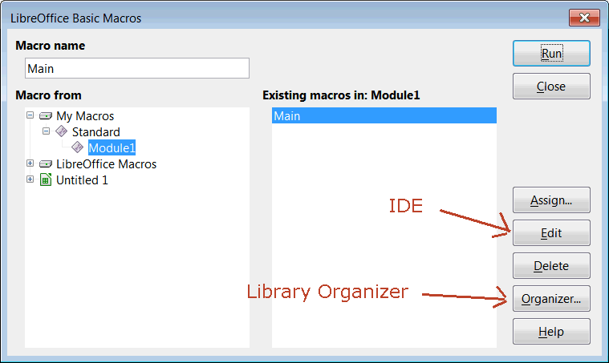
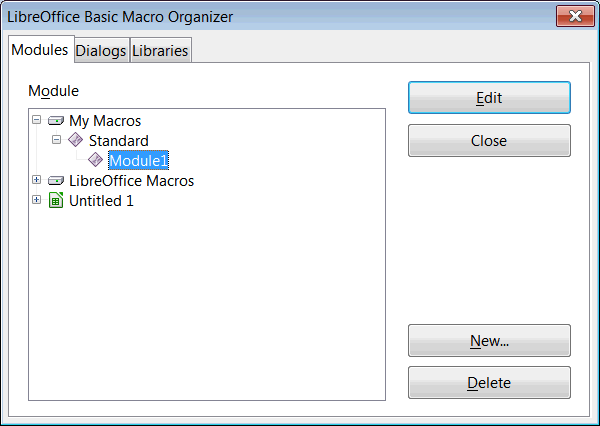

The macros are grouped in modules and dialogs( =xba files). These are grouped in libraries. Which modules and dialogs belong to a library is record in script.xlb and dialog.xlb. These files together are stored in a folder. The files script.xlc and dialog xlc record, which such library folder exists. These files together with the library folders are stored in the directory "basic". Such directory exists for the single user in its LibreOffice user directory, and common for all users in the directory "share" in the LibreOffice installation. Because of the. xlb and .xlc files you cannot simple move the .xba files around.
You can use the Organizer to administrate your macros. Find the Organizer in Tools > Macros > Organize Macros.


The Organizer can export and import whole libraries (execpt for library "standard") in tab "Libraries".

And you can move (mouse drag) and copy (mouse drag + Ctrl) modules between libraries and documents in tab "Modules".

A single user cannot store a recorded macro into the common "Basic" directory, but he can only store it into its user directory, or he can store a macro into a module inside a document. If you have used the default settings, your macros are in the library "standard".
To get the macros to the new computer, you can export the libraries on the old computer. That results in some folders. Copy these folders to the new computer. On the new computer import the libraries using the Organizer. To move the macros, which are inside the "Standard" library, make a dummy library "Transport" or use a document, copy the modules and dialog from "Standard" to "Transport" or to the document, and on the new computer move them from there to the new "Standard" library. Do this using the Organizer.
Find more about organizing macros in the Basic guides, and in the Books and Articles by Andrew Pitonyak.
If you never have used any own libraries you can transport macros as text files. Click on "Edit" in the Organizer to open the IDE. Click on icon "save BASIC" to write the macros to a .bas file. Copy the .bas file to the new computer. Open the IDE there and click on icon "Insert BASIC source" to read the macros.